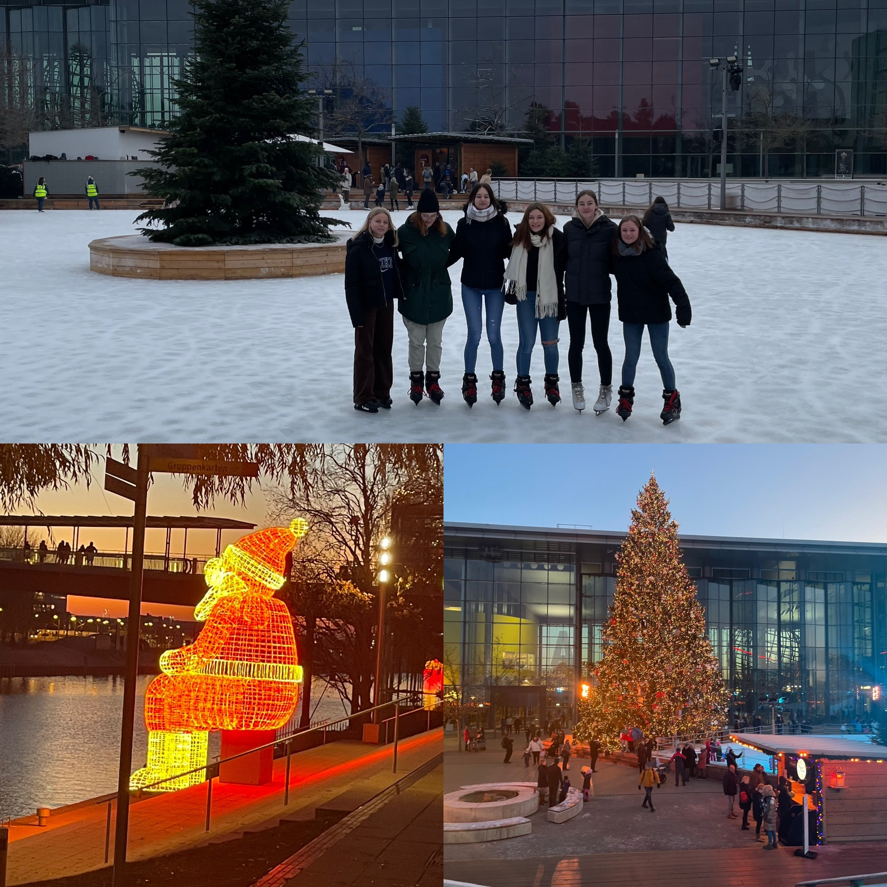
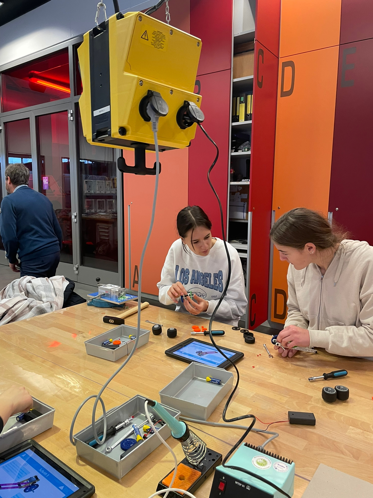
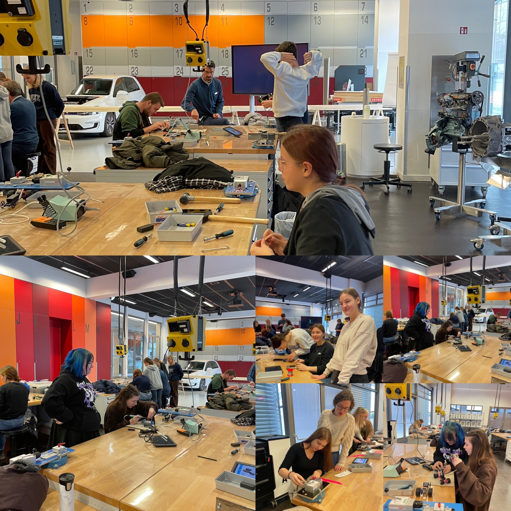
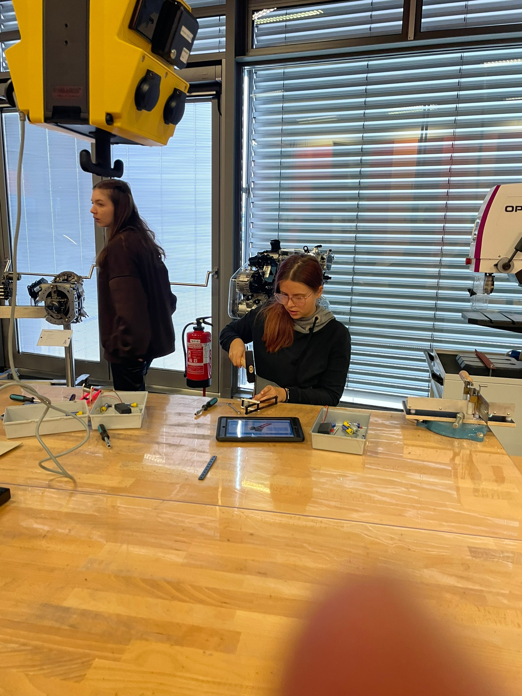
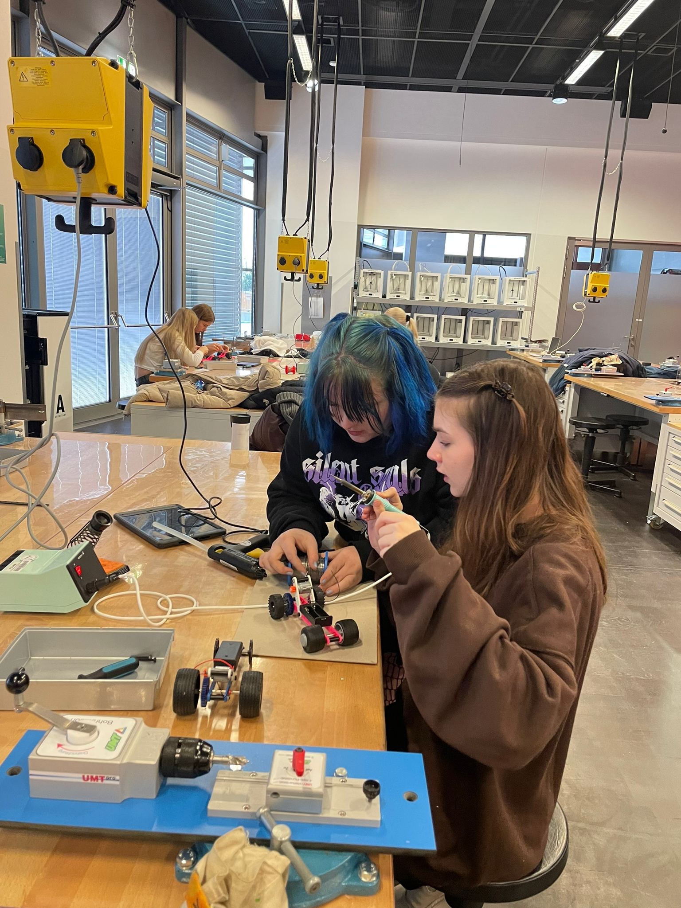
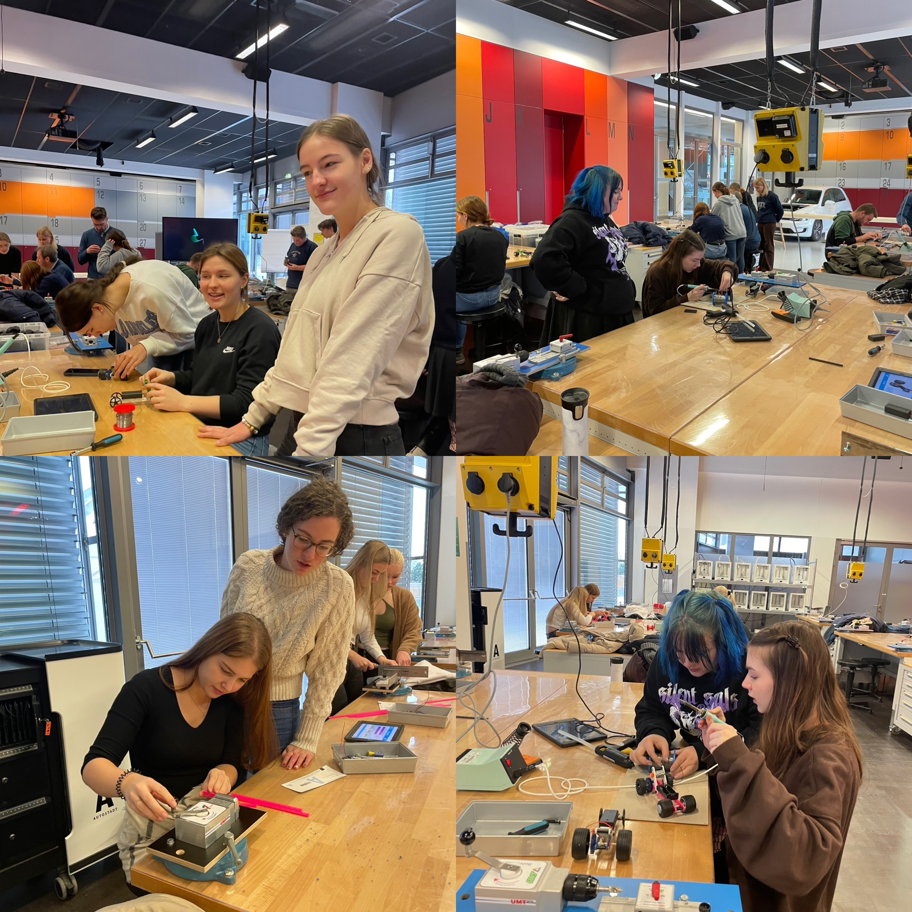

Ausflug nach WOB
Am vergangenen Samstag haben sich die Mitglieder der Häppchen Sag Workshop Gruppe aufgemacht, um einen Ausflug nach Wolfsburg zu unternehmen. Das Ziel ihrer Reise war das Auto Museum, das sich in der Stadt befindet. Schon beim Betreten des Museums waren alle begeistert von der großen Auswahl an historischen und modernen Autos, die ausgestellt waren. Von klassischen Oldtimern bis hin zu futuristischen Konzeptautos war alles dabei. Besonders beeindruckend fanden die Workshop-Teilnehmer die Ausstellung von Volkswagen, die sich im ersten Stock des Museums befand. Hier konnten sie die Entwicklung des Unternehmens und seiner Autos durch die Jahrzehnte verfolgen. Nachdem sie sich das Museum in aller Ruhe angeschaut hatten, machten sich die Häppchen Sag Workshop-Mitglieder auf den Weg in die Innenstadt von Wolfsburg. Dort gönnten sie sich eine Pause bei einer Tasse Kaffee und einem leckeren Stück Kuchen, bevor sie sich wieder auf den Heimweg machten. Insgesamt war es ein gelungener Ausflug und alle Teilnehmer sind sich einig: Das Auto Museum in Wolfsburg ist einen Besuch wert.





